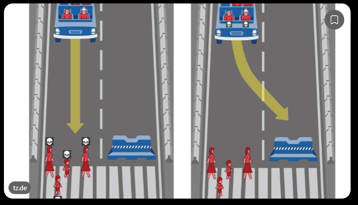
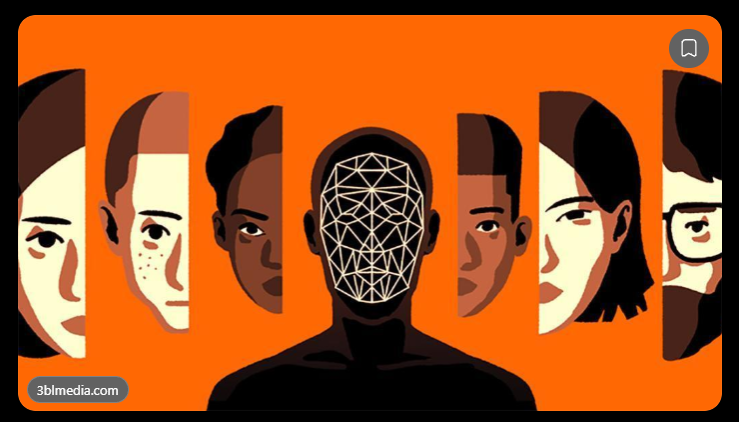
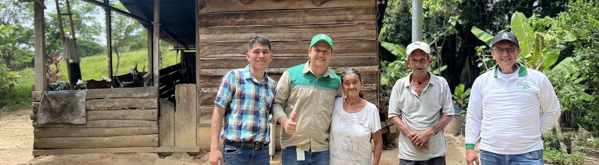

Coordinador de Calidad del Servicio T&D
CENS S.A. E.S.P.
Formación
Ingeniero de Sistemas, Especialista en Gestión y Evaluación de Proyectos de la Universidad Industrial de Santander (UIS) y Científico de Datos de la Pontificia Universidad Javeriana.
Maestrante en Inteligencia Artificial de la Universidad de los Andes.
Trayectoria
Cuenta con más de 10 años de experiencia en gestión regulatoria, calidad del servicio, optimización de procesos mediante inteligencia artificial y desarrollo de aplicaciones en CENS S.A. E.S.P.
Actualmente, se desempeña como Coordinador de Calidad del Servicio T&D en CENS.
+10 años de experienciaInteligencia ArtificialCalidad del servicioGestión regulatoria
Universidad Industrial de SantanderEspecialista en Gestión y Evaluación de Proyectos
Pontificia Universidad JaverianaMaestria en Ciencia de Datos
Universidad de los AndesMaestrante en Inteligencia Artificial
Portada · Sección 2 de 13
Navegando el futuro tecnológico con responsabilidad y justicia algorítmica
Dilemas éticos · Sección 3 de 13
¿Qué es un dilema ético?
01 · Dilemas Éticos
Cuando los valores entran en conflicto
Un dilema ético surge cuando dos valores legítimos —como la eficiencia y la equidad— apuntan en direcciones opuestas, y cualquier decisión implica renunciar a algo importante. No hay una respuesta puramente técnica: alguien debe definir los criterios, asumir el costo y responder por las consecuencias.
Dilemas éticos · Sección 4 de 13
Ejemplos

Ejemplo 1
El dilema del coche autónomo: ¿a quién debe salvar la IA?
Dilema
Un vehículo autónomo sufre una falla en los frenos y debe elegir entre dos alternativas que implican consecuencias mortales: continuar su trayectoria y atropellar a varios peatones, o desviarse y poner en peligro a sus pasajeros.
La pregunta es
¿Cómo debería programarse la inteligencia artificial para tomar esa decisión?
Preguntas y principio ético
¿Debe priorizar la vida de los peatones o la de los pasajeros?
¿Debe intentar salvar al mayor número de personas?
¿Es correcto que un algoritmo tome una decisión de vida o muerte?
¿Quién es responsable: el fabricante, el programador o el propietario?
Este dilema se hizo especialmente conocido gracias al experimento Moral Machine del MIT, que se volvió viral al permitir que personas de todo el mundo respondieran escenarios morales relacionados con vehículos autónomos.
Principio ético en discusión: el valor de la vida humana, la responsabilidad y la toma de decisiones morales automatizadas.

Ejemplo 2
La IA discriminatoria: ¿puede un algoritmo ser injusto?
Dilema
Una empresa o institución utiliza inteligencia artificial para seleccionar candidatos a un empleo, conceder créditos o identificar personas mediante reconocimiento facial. Sin embargo, el sistema produce resultados menos precisos o más desfavorables para determinados grupos de personas.
La pregunta es
¿Es ético confiar en una IA que parece objetiva, pero que puede reproducir los prejuicios humanos?
Preguntas y principio ético
¿Quién responde si el algoritmo discrimina?
¿Es suficiente que el sistema sea preciso en promedio si perjudica a ciertos grupos?
¿Debe una empresa utilizar una IA que toma decisiones más rápido, pero no puede explicar claramente sus resultados?
¿Cómo se garantiza que las decisiones sean justas?
Principio ético en discusión: la justicia, la equidad y la no discriminación algorítmica.
Dilemas éticos · Sección 5 de 13
Dilema Ético: Plan de Inversiones Regulatoria (PIR) - CREG 015 de 2018
Equipo de CENS en la Subestación San Roque (Norte de Santander) · Plan de Inversiones Regulatoria PIR - CREG 015 de 2018
⚡
El caso
Una IA identifica que las inversiones en zonas rurales generan poco retorno económico y recomienda reducirlas para invertir en zonas urbanas con mayor rentabilidad. La decisión mejora los indicadores financieros de la empresa, pero aumenta la brecha en la calidad del servicio entre las zonas urbanas y rurales.
Preguntas para la audiencia
1
¿Debe prevalecer la eficiencia económica o la equidad en el servicio?
2
¿Quién es responsable de la decisión: la IA o los directivos?
3
¿Debería existir siempre revisión humana?
4
¿Qué principios éticos deberían programarse en el algoritmo?
Este caso enfrenta directamente rentabilidad, inclusión, responsabilidad y servicio público: cuatro temas centrales del sector eléctrico.
Sesgo algorítmico · Sección 6 de 13
Sesgo algorítmico
02 · Sesgo Algorítmico
Lo que los datos ya traen
El sesgo no nace en el algoritmo: viene de los datos con los que aprende. Si la historia registra desigualdades, el modelo puede repetirlas a gran escala y con apariencia de objetividad. Por eso no basta con entrenar bien: hay que auditar los datos, los resultados y a quiénes afectan.
Sesgo algorítmico · Sección 7 de 13
Ejemplos
Ejemplo 1
Ejemplo 1 · Google Photos, 2015
Personas de color etiquetadas como simios
Qué pasó
El sistema de reconocimiento de imágenes de Google Photos etiquetó automáticamente las fotos de dos personas de color con la palabra “gorilas”. El error se hizo viral cuando una de las personas afectadas lo publicó, y Google tuvo que disculparse públicamente y retirar esa etiqueta de su sistema.
Por qué ocurrió
El modelo se había entrenado con datos poco diversos y no se había probado lo suficiente con distintos tonos de piel: el algoritmo no “veía” a todas las personas con la misma precisión.
Lección: si los datos de entrenamiento no representan a toda la población, el sistema discrimina — aunque nadie lo haya programado para hacerlo.
Ejemplo 2
Ejemplo 2 · Amazon, 2018
La IA de contratación que penalizaba a las mujeres
Qué pasó
Amazon entrenó una herramienta de inteligencia artificial con las hojas de vida recibidas durante 10 años —en su mayoría de hombres— para automatizar la selección de personal. El sistema aprendió ese patrón y empezó a rebajar la calificación de los currículums de mujeres, incluso penalizando la palabra “mujeres” en el texto. Amazon terminó abandonando el proyecto.
Por qué ocurrió
Los datos históricos reflejaban una desigualdad previa en la contratación tecnológica, y el modelo la convirtió en una regla automática de decisión.
Lección: entrenar con datos del pasado sin auditarlos hace que la IA reproduzca y amplifique las desigualdades históricas.
Sesgo algorítmico · Sección 8 de 13
Sesgo algorítmico · Reducción del indicador de cartera de CENS S.A. E.S.P.
Atención a clientes y usuarios en una oficina de CENS · Imagen tomada de www.cens.com.co/clientes-y-usuarios
⚡
El caso
El equipo de facturación/cartera de CENS S.A. E.S.P. entrena un modelo de IA con su historial de pagos para predecir qué clientes tienen mayor riesgo de no pagar la factura. Como en los datos las zonas rurales y los barrios de estratos bajos registran más atrasos, el modelo aprende ese patrón y empieza a marcar automáticamente a esos usuarios como ‘alto riesgo’, priorizando los cortes del servicio y endureciendo las condiciones de financiación justo en las comunidades más vulnerables.
Preguntas para la audiencia
1
¿El algoritmo crea la discriminación o solo refleja la que ya existía en los datos?
2
¿Quién es responsable del resultado: los datos, quien entrenó el modelo o quien lo usa?
3
¿Qué métricas de equidad por zona y estrato deberían medirse antes de poner el sistema en producción?
4
¿Es suficiente con quitar la ubicación o el estrato de los datos para que el modelo deje de discriminar?
Un modelo preciso en promedio puede seguir siendo injusto con las comunidades más vulnerables: en un servicio público esencial como la energía, la equidad se diseña, se mide y se audita, no se asume.
Explicabilidad y gobernanza · Sección 9 de 13
Explicabilidad y gobernanza
03 · Explicabilidad y Gobernanza
Entender para poder responder
Una decisión que nadie puede explicar tampoco se puede impugnar ni corregir. La explicabilidad abre la caja negra, y la gobernanza pone las reglas: quién decide, quién supervisa y quién responde cuando el sistema se equivoca. Sin ambas, no hay confianza posible.
Explicabilidad y gobernanza · Sección 10 de 13
Ejemplos
Ejemplo 1
Ejemplo 1 · COMPAS, Estados Unidos
El puntaje de riesgo que nadie podía explicar
Qué pasó
Tribunales de Estados Unidos empezaron a usar COMPAS, un programa comercial que asigna a cada acusado un puntaje de riesgo de volver a delinquir, y que los jueces podían tener en cuenta al decidir una condena.
Por qué era una caja negra
La fórmula del puntaje era un secreto comercial de la empresa dueña del software. Cuando el acusado Eric Loomis pidió saber cómo se había calculado su “alto riesgo”, no se le permitió conocerlo: ni él, ni su defensa, ni el propio juez podían explicar qué factores pesaron ni cuánto.
El problema: una decisión que afecta la libertad de una persona no podía ser explicada, cuestionada ni auditada por nadie.
Ejemplo 2
Ejemplo 2 · Algoritmo de salud, 2019
El riesgo de un paciente calculado sin poder ver cómo
Qué pasó
Hospitales de Estados Unidos usaban un algoritmo comercial para identificar a los pacientes que necesitaban atención adicional. El sistema asignaba a cada persona un puntaje de riesgo, y millones de decisiones se tomaban a partir de ese número.
Por qué era una caja negra
El funcionamiento interno era propietario y opaco: los hospitales lo adoptaron sin comprender del todo qué medía en realidad. Solo cuando investigadores externos lo auditaron (estudio publicado en Science, 2019) se descubrió que el puntaje no medía la enfermedad, sino el gasto histórico en salud — y que, por eso, los pacientes negros debían estar más enfermos que los blancos para obtener el mismo nivel de riesgo.
El problema: nadie dentro del sistema podía explicar el puntaje, así que el error permaneció invisible mientras afectaba a millones de personas.
Explicabilidad y gobernanza · Sección 11 de 13
Explicabilidad: Detección de fraudes en el consumo de energía

CENS junto a la comunidad rural · Responsabilidad Social Empresarial — Imagen tomada de www.cens.com.co
⚡
EL CASO
El equipo de Perdidas No Tecnicas de CENS S.A E.S.P. usa un modelo de IA que analiza los consumos y automáticamente marca a ciertos usuarios con ‘consumo anómalo’, generando una orden de inspección por posible fraude. Un usuario afectado reclama y pregunta por qué fue señalado, pero nadie en la empresa puede explicarlo: la única respuesta disponible es que ‘el sistema lo detectó’, sin poder decir qué datos pesaron en esa decisión.
Preguntas para la audiencia
1
¿Qué explicación mínima merece un usuario señalado por un algoritmo?
2
¿Puede la empresa actuar solo con el puntaje de la IA, sin revisión humana previa?
3
¿Quién responde si la IA se equivoca: la empresa, el proveedor del software o el funcionario que ejecuta la orden?
4
¿Qué debería quedar registrado para que la decisión se pueda auditar e impugnar?
Una decisión que afecta un servicio esencial no puede sostenerse en un “el sistema lo dijo”: sin explicación no hay confianza, no hay defensa posible y no hay gobernanza.
Conclusiones · Sección 12 de 13
Conclusiones
1
Autonomía y dilemas. Delegar una decisión a una IA no delega la responsabilidad: ante valores en conflicto, los criterios los define —y los responde— una persona.
2
Justicia y sesgos. Los algoritmos aprenden de un pasado desigual y pueden amplificarlo; la equidad se diseña, se mide y se audita desde los datos.
3
Transparencia. Una decisión que nadie puede explicar no se puede impugnar ni corregir: el fin de la caja negra es un imperativo social.
4
Gobernanza como base. Privacidad, responsabilidad corporativa y autodeterminación tecnológica sostienen una IA ética y segura.
La tecnología dicta lo que podemos hacer. La ética y el derecho dictan lo que debemos hacer: somos los arquitectos de una IA al servicio de la humanidad.